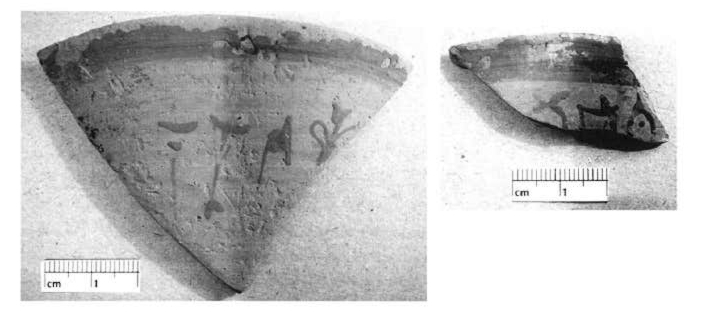
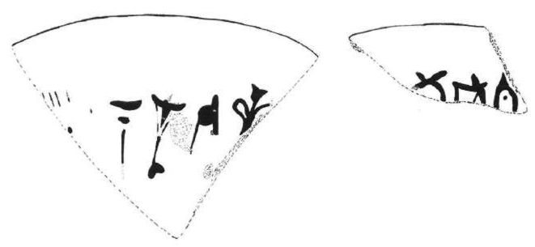

-
SKOZc1
Names
SKOZc1, SKO Zc 1
Support
Inked inscription
Location
Skoteino Cave
Findspot
Unavailable


Scribe
Unavailable
Context
Unavailable
Dimensions
Catalogue
Readings
1 1 0 *900 none
1 1 1 NA none
1 1 1 TU none
1 1 1 *301 none
1 1 1 NE none
1 2 2 QA none
1 2 2 KI none
1 2 2 TI none
𐄁𐘅𐘹𐙕𐘗𐘌𐘸𐘠
*900NATU*301NEQAKITI
𐄁𐘅𐘹𐙕𐘗
𐘌𐘸𐘠
*900NATU*301NE
QAKITI
SKO Zc 1
(Knossos, Stratigraphical
Museum, Skoteino Cave 187 &
188), two fragments of a LM IA-B chalice rim;
inscription painted on the
exterior (M. Perna, A. Kanta, and L. Tyree, "An
Unpublished Inscription in
Linear A from the Skoteino Cave, Crete [SKO Zc
1]," in M. Perna, ed.,
Studi in onore di Enrica Fiandra. Contributi di
archeologia egea e
vicinorientale
[De Bocard, Paris 2005]
321-33)
for frag.
1, see IO Za 8 (libation table,
]A-NA-TI-*301-WA-JA[), and (even better)
AP Za 2.1 (stone jar,
]-KU-PA
3
-NA-TU-NA-TE-[) where the
KU-PA
3
or
KU-PA
3
-NA may be a prefix
(KU-PA
3
-NU appears
frequently in the HT tablets)
SYME
Commentary © John Younger
References
papers/SKOZc1.pdf